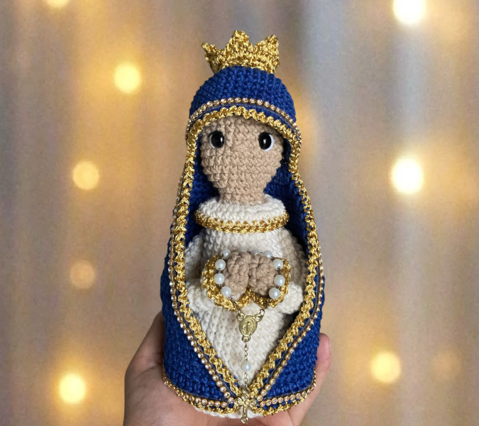
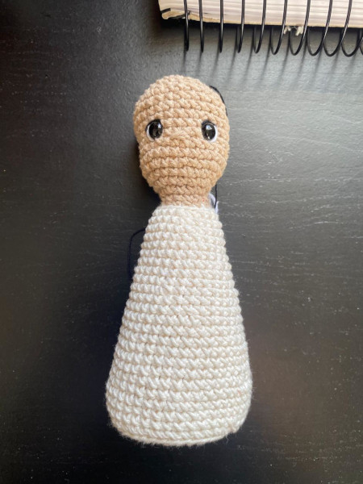
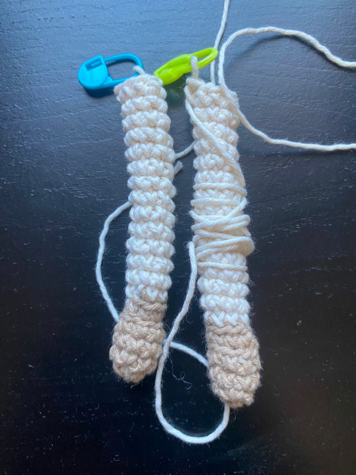
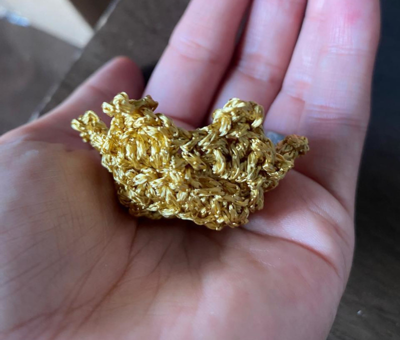
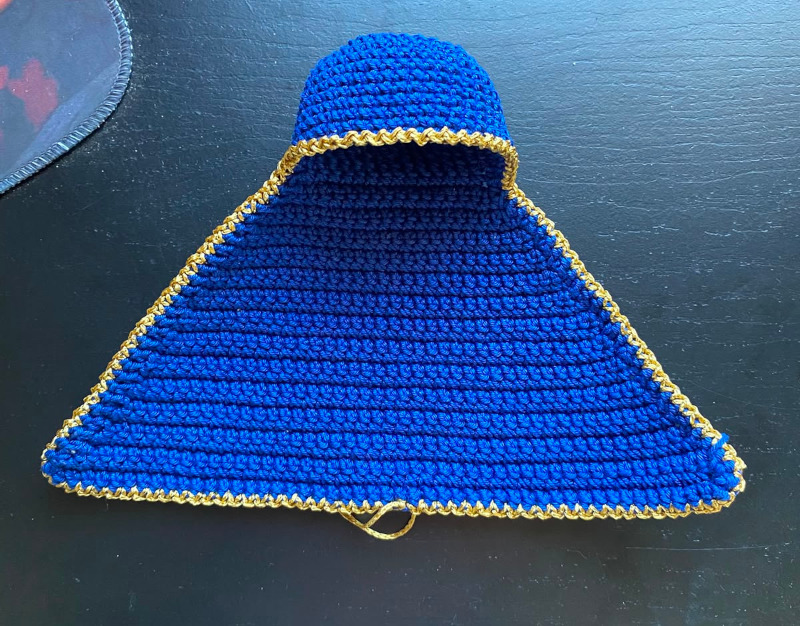

Receita de Nossa Senhora Aparecida de Amigurumi Passo a Passo

Materiais
- Agulha de acordo com seu fio (sugerimos 2mm, 2.25mm ou 2.5mm)
- Fio de Algodão Bella (cores: branco 002, cru 004, azul 1566, azul claro 501, rosa 377)
- Fibra siliconada para encher o corpo enquanto tece
- Blush e pincel de maquiagem
- Cola silicone
- Tesoura
- Marcadores
- Pinos

Corpo e Cabeça
- Nota: Começar com a cor branca.
- 1ª carr: Anel mágico com 6pb (6pt)
- 2ª carr: 6 aumentos (12pt)
- 3ª carr: (1pb, 1aum) x6 (18pt)
- 4ª carr: (2pb, 1aum) x6 (24pt)
- 5ª carr: (3pb, 1aum) x6 (30pt)
- 6ª carr: (4pb, 1aum) x6 (36pt)
- 7ª carr: (5pb, 1aum) x6 (42pt)
- 8ª carr: (13pb, 1aum) x3 (45pt)
- 9ª carr: 45pb em BLO (45pt)
- Dica: Inserir base plástica ou acrílica bem firme.
- 10ª e 11ª carr: 45pb (45pt)
- 12ª carr: (13pb, 1dim) x3 (42pt)
- 13ª e 14ª carr: 42pb (42pt)
- 15ª carr: (12pb, 1dim) x3 (39pt)
- 16ª e 17ª carr: 39pb (39pt)
- 18ª carr: (11pb, 1dim) x3 (36pt)
- 19ª e 20ª carr: 36pb (36pt)
- 21ª carr: (10pb, 1dim) x3 (33pt)
- 22ª e 23ª carr: 33pb (33pt)
- 24ª carr: (9pb, 1dim) x3 (30pt)
- 25ª e 26ª carr: 30pb (30pt)
- 27ª carr: (8pb, 1dim) x3 (27pt)
- 28ª carr: 27pb (27pt)
- 29ª carr: 27pb (27pt)
- 30ª carr: (7pb, 1dim) x3 (24pt)
- 31ª e 32ª carr: 24pb (24pt)
- 33ª carr: (6pb, 1dim) x3 (21pt)
- 34ª e 35ª carr: 21pb (21pt)
- 36ª carr: (5pb, 1dim) x3 (18pt)
- 37ª carr: (4pb, 1dim) x3 (15pt)
- 38ª carr: (3pb, 1dim) x3 (12pt)
- Troca de cor: Mudar para a cor da pele e encher bem o pescoço para firmar.
- 39ª carr: (2pb, 1dim) x3 (9pt)
- 40ª carr: 9pb (9pt)
- 41ª carr: (2pb, 1aum) x3 (12pt)
- 42ª carr: 12 aum (24pt)
- 43ª carr: (3pb, 1aum) x6 (30pt)
- 44ª carr: (4pb, 1aum) x6 (36pt)
- 45ª carr: (5pb, 1aum) x6 (42pt)
- 46ª a 54ª carr: 42pb (9 carreiras de 42 pt)
- 55ª carr: (5pb, 1dim) x6 (36pt)
- 56ª carr: (4pb, 1dim) x6 (30pt)
- 57ª carr: (3pb, 1dim) x6 (24pt)
- 58ª carr: (2pb, 1dim) x6 (18pt)
- 59ª carr: (1pb, 1dim) x6 (12pt)
- 60ª carr: 6 dim (6pt)
- Arremate.

Braços (2x)
- Nota: Começar com a cor macadâmia.
- Carr 1: Anel mágico com 6pb (6pb)
- Carr 2: (1pb, 1aum) x3 (9pb)
- Carr 3: 9pb (9pb)
- Carr 4: (7pb, 1dim) (8pb)
- Carr 5: 8pb (8pb)
- Carr 6: 8pb em BLO (pegar só a alça de trás do pb)
- Carr 7 a carr 21: 8pb (8pb) (15 carreiras de pontos fixos)
- Encher com pouca fibra. Estruturar com arame de artesanato ou limpador de cachimbo.
- Achatar a abertura e fechar com 3 ou 4 pb. Colar ou costurar no corpo.

Coroa
- Nota: Na cor dourada. Começar com um cordão de 25 correntes.
- Carr 1: 25pb
- Carr 2: 25pb
- Carr 3: 1pbx, 4corr, pular 2pb, 1pbx, 5corr, pular 2pb, 1pbx, 4corr, pular 2pb, 1pbx, [pular 1pb, (2mpa, 1corr, 2mpa) no mesmo ponto, pular 1pb, 1pbx] x4. O último pbx será no primeiro pbx da carreira.
- Carr 4: (2pb, 1pb com picot, 3pb) no espaço das 4 corr, (3pb, 1pb com picot, 4pb) no espaço das 5 corr, (2pb, 1pb com picot, 3pb) no espaço das 4 corr. Fechar no próximo pbx.

Manto
- Nota: Começar com a cor azul.
- Carr 1: Anel mágico (6pb)
- Carr 2: 6 aum (12pb)
- Carr 3: (1pb, 1aum) x6 (18pb)
- Carr 4: (2pb, 1aum) x6 (24pb)
- Carr 5: (3pb, 1aum) x6 (30pb)
- Carr 6: (4pb, 1aum) x6 (36pb)
- Carr 7: (5pb, 1aum) x6 (42pb)
- Carr 8: (13pb, 1aum) x3 (45pb)
- Carr 9 a 17: 45 pb (45pb) (9 carreiras de 45pb)
- Carr 18: 15pb, virar.
- Aviso: A partir daqui trabalhar em crochê linear (crochê tradicional de vai e volta).
- Carr 19: (1aum, 13pb, 1aum) (17pb)
- Carr 20: (1 aum, 15pb, 1aum) (19pb)
- Carr 21: (1 aum, 17pb, 1aum) (21pb)
- Carr 22: (1aum, 19pb, 1aum) (23pb)
- Carr 23: (1aum, 21pb, 1aum) (25pb)
- Carr 24: (1aum, 23pb, 1aum) (27pb)
- Carr 25: 27pb
- Carr 26: (1aum, 25pb, 1aum) (29pb)
- Carr 27: 29pb
- Carr 28: (1aum, 27pb, 1aum) (31pb)
- Carr 29: 31pb
- Carr 30: (1aum, 29pb, 1aum) (33pb)
- Carr 31: 33pb
- Carr 32: (1aum, 31pb, 1aum) (35pb)
- Carr 33: 35pb
- Carr 34: (1aum, 33pb, 1aum) (37pb)
- Carr 35: 37pb
- Carr 36: (1aum, 35pb, 1aum) (39pb)
- Carr 37: 39pb
- Carr 38: (1aum, 37pb, 1aum) (41pb)
- Carr 39: 41pb
- Carr 40: (1aum, 39pb, 1aum) (43pb)
- Carr 41: 43pb
- Carr 42: (1aum, 41pb, 1aum) (45pb)
- Carr 43: 45pb
- Carr 44: (1aum, 43pb, 1aum) (47pb)
- Carr 45: 47pb
- Carr 46: (1aum, 45pb, 1aum) (49pb)
- Carr 47: 49pb
- Carr 48: (1aum, 47pb, 1aum) (51pb)
- Carr 49: 51pb
- Carr 50: (1aum, 49pb, 1aum) (53pb)
- Conferir altura e fazer mais ou menos carreiras se necessário.
- Acabamento do Manto:
- Fazer 1 volta completa de pb na cor do manto.
- Fazer 1 volta completa de pb em cor contrastante à escolha (dourada, prata, etc).
- Decorar à escolha: bordados, bandeirinhas, etc.